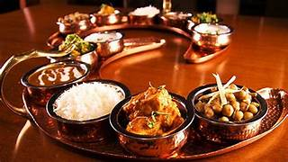
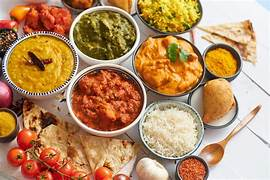
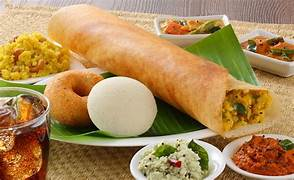
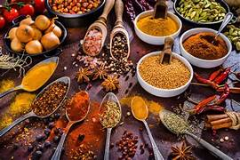

Indian Foods
- Colors of India on a Plate
Indian food is one of the most diverse and flavorful cuisines in the world. It is not just about taste, but also about culture, tradition, and history. Every region of India has its own unique style of cooking, ingredients, and spices, which makes Indian cuisine incredibly rich and varied. “Indian food is a celebration of flavors, colors, and traditions. Each region has its own unique style—North India’s rich curries, South India’s spicy rice dishes, East India’s mouth-watering sweets, and West India’s vibrant street food. From tangy chaats to creamy gravies, from crispy dosas to soft rasgullas, Indian cuisine is a journey of taste that connects culture and tradition on every plate.”




